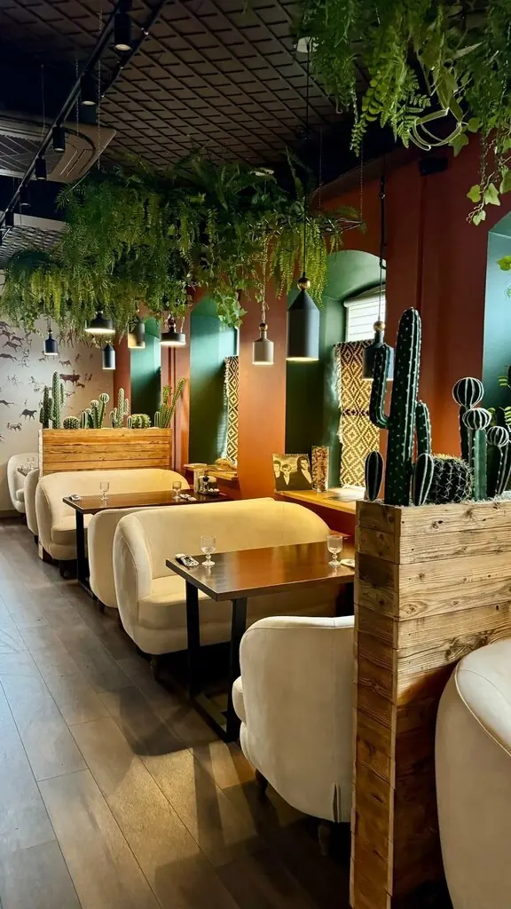
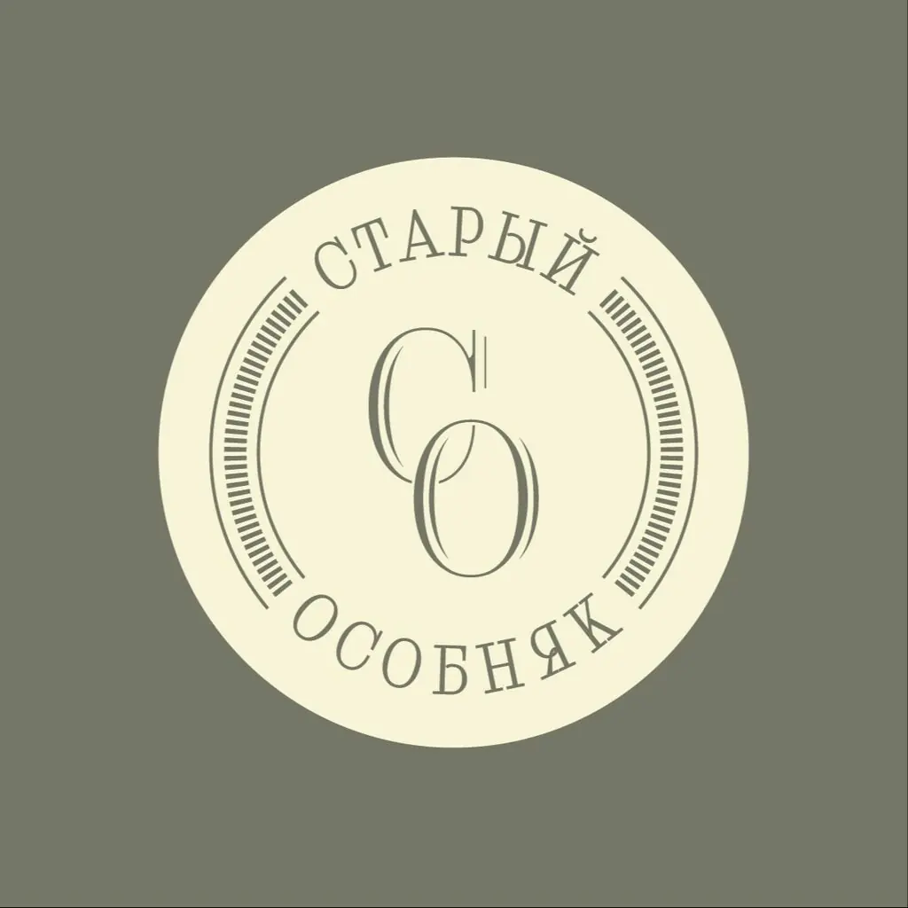

Старый Особняк
Прокрутите вниз, и двери откроются. За ними авторская русская кухня, кирпич и живой вокал по вечерам.
4,9 · 398 оценок
Комнаты особняка
Хозяйский стол
С мангала
Дорадо на углях1 610 ₽
Люля-кебаб из баранины720 ₽
Филе бедра цыплёнка560 ₽
Из печи и супы
Борщ из печи с говядиной560 ₽
Уха Царская с расстегаем720 ₽
Суп-крем из грибного трио680 ₽
Закуски
Мимоза с мурманским лососем720 ₽
Сельдь с печёной картошкой490 ₽
Ассорти европейских сыров950 ₽
Часть меню с Яндекс Карт, цены уточняйте у официанта.
Гости дома
Вкусная кухня, приятный вежливый персонал и потрясающая Полина, которая украсила этот вечер своим чудесным вокалом!Anastasiya Seraya
Интересная кухня, прекрасное обслуживание, чудесная обстановка!Ольга Великосельская
Лучший бармен, что я встречал. Просто царь барной стойки.Городской житель